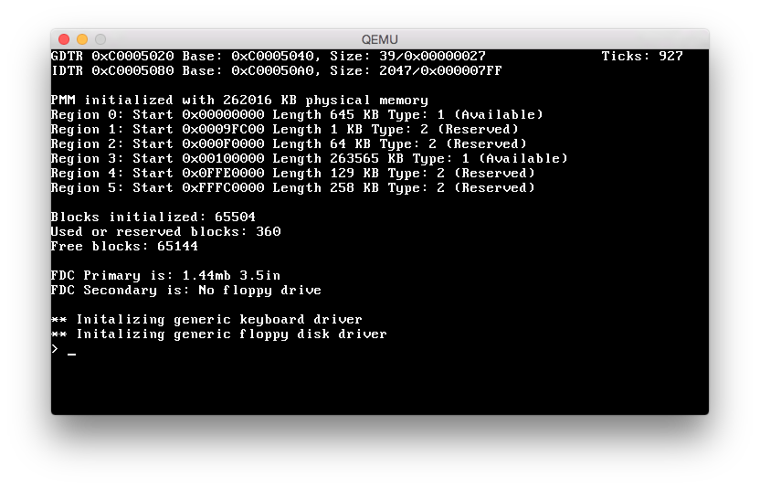

Detecting floppy disk drives using CMOS
August 8, 2015
Estimated reading time: 3 minutesThis post was published some time ago. The world of technology is rapidly evolving, and in some extreme cases even posts just one month old will be out-dated. So there is a chance that some of the concepts, technology or pricing in this post is no longer applicable.
As a hobby project I am working on a small OS project for i386 (and ARM). Recently I was writing a driver for floppy disk drives and I stumbled on to a issue that I needed to find a solution for.
The issue was how to detect if any or how many floppy disk drives are present on a given system. I quick google informed me that the CMOS was normally used for this and the page provided some getting started information on how to detect floppy disk drives. The #osdev wiki also had some good information about the CMOS. Using this information I started implementing a very simple FDD detection routine to use in my OS.
First a bit about the CMOS: The CMOS is a static memory chip used to store information for the BIOS while the computer is powered down. The CMOS memory is located on the same chip as the real time clock. Because of this developers normally think of the RTC to be a part of the CMOS, even though it is not. The CMOS can be accessed via port IO. It uses the ports 0x71 and 0x70. To read data you send the number/id of the register you want to read from to port 0x70 and the value of the register becomes available from port 0x71.
With this information in my mind I then started on my implementation. Using the documentation from the #osdev wiki I knew that the information about the floppy disk drives was present in register 0x10 and all I had to do was to read it.
My implementation became as follows:
hwdetect.h
typedef enum
{
HWD_FDD_NONE = 0,
HWD_FDD_360_525 = 1,
HWD_FDD_1200_525 = 2,
HWD_FDD_720_35 = 3,
HWD_FDD_1440_35 = 4,
HWD_FDD_2880_35 = 5
} hwd_floppy_device_t;
typedef struct
{
hwd_floppy_device_t master;
char* master_desc;
hwd_floppy_device_t slave;
char* slave_desc;
} hwd_floppy_t;
hwd_floppy_t hwdetect_floppy_disks();hwdetect.c
char *floppy_descripive_names[6] =
{
"No floppy drive",
"360kb 5.25in",
"1.2mb 5.25in",
"720kb 3.5in",
"1.44mb 3.5in",
"2.88mb 3.5in"
};
hwd_floppy_t hwdetect_floppy_disks()
{
pio_outb(0x10, 0x70);
unsigned char data = pio_inb(0x71);
//High nibble -> Master device
//Low nibble -> Slave device
hwd_floppy_t info =
{
.master = data >> 4,
.master_desc = floppy_descripive_names[data >> 4],
.slave = data & 0x0F,
.slave_desc = floppy_descripive_names[data & 0x0F]
};
return info;
}I implemented this in my OS and used it to initialize my driver for the first or the second floppy disk drive. My real implementation of this and my usage of this code can be seen in the screenshot below and in the files linked to. Next step will be to implement this detection inside my standalone floppy device driver. 